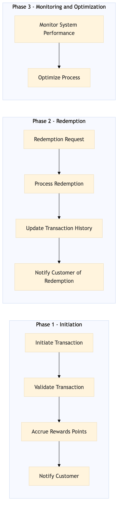

This process document outlines the end-to-end flow for One Key Rewards accrual and redemption across OTA and TMC systems, ensuring seamless integration and user experience.
| Trigger | A customer books a travel itinerary through Expedia Group's OTA platforms or submits an expense report through Amex GBT / SAP Concur TMC systems. |
| Outcome | The process successfully accrues rewards points for the customer in their One Key account and allows redemption of those points for future travel bookings, enhancing customer loyalty and satisfaction. |
| Systems | Expedia Open World Partner Central Amadeus NDC Sabre GDS Travelport EVC One Key TravelAds AWS SageMaker Snowflake Kafka Salesforce Tableau SAP Concur T2 SAP Concur Expense Amex GBT Neo/Complete SAP S/4HANA International SOS Cvent Amex Corporate Card VCN SAP Analytics Cloud Workday |

Click to enlarge
| Step | Name & Pain Point | Role | System | Input | Output | KPI | Flags |
|---|---|---|---|---|---|---|---|
| 1.1 | Initiate Transaction Handling high transaction volumes during peak travel seasons | Travel Agent/Consumer | Expedia Open World, Partner Central, Amadeus NDC, Sabre GDS, Travelport, EVC, One Key, TravelAds | Booking details or expense report submission | Transaction ID and confirmation | 95% successful transaction initiation rate within 2 seconds | ⚠ Exception |
| 1.2 | Validate Transaction Real-time data processing and validation | Backend System | AWS SageMaker, Snowflake, Kafka, Salesforce, Tableau | Transaction ID and details | Validation status (success/failure) | 98% successful validation rate within 5 seconds | ◆ Decision |
| 1.3 | Accrue Rewards Points Ensuring accurate rewards calculation based on various booking criteria | Backend System | One Key, Snowflake, Kafka | Validation status and transaction details | Rewards points accrued in One Key account | 90% successful accrual rate within 10 seconds | ⚠ Exception |
| 1.4 | Notify Customer Handling multiple communication channels and ensuring delivery | Customer Communication System | Salesforce, Tableau | Rewards points accrued and transaction details | Notification sent to customer via email/SMS | 95% successful notification rate within 1 minute | ⚠ Exception |
| 1.5 | Redemption Request Managing inventory and availability for redemption | Travel Agent/Consumer | One Key, Amadeus NDC, Sabre GDS, Travelport, EVC | Redemption request and points available in One Key account | Redemption confirmation | 85% successful redemption rate within 2 minutes | ◆ Decision |
| 1.6 | Process Redemption Ensuring atomicity of transactions to prevent double redemptions | Backend System | One Key, Snowflake, Kafka | Redemption request and points available in One Key account | Redemption processed and points deducted from One Key account | 90% successful redemption processing rate within 5 seconds | ⚠ Exception |
| 1.7 | Update Transaction History Maintaining consistency across multiple systems | Backend System | Snowflake, Kafka, Salesforce | Redemption confirmation and transaction details | Transaction history updated in customer's account | 95% successful transaction history update rate within 10 seconds | ⚠ Exception |
| 1.8 | Notify Customer of Redemption Handling multiple communication channels and ensuring delivery | Customer Communication System | Salesforce, Tableau | Redemption confirmation and transaction details | Notification sent to customer via email/SMS | 95% successful notification rate within 1 minute | ⚠ Exception |
| 1.9 | Monitor System Performance Real-time monitoring and quick response to issues | Operations Team | AWS SageMaker, Snowflake, Kafka, Salesforce, Tableau | System logs and performance metrics | Performance report and alerts for anomalies | 98% system uptime with less than 5% error rate | ⚠ Exception |
| 1.10 | Optimize Process Balancing between innovation and stability | Data Science Team | AWS SageMaker, Snowflake, Kafka | Performance data and customer feedback | Process optimization recommendations | 95% improvement in key performance indicators within 3 months | ⚠ Exception |